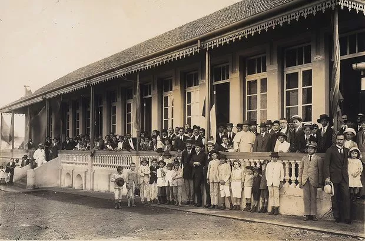
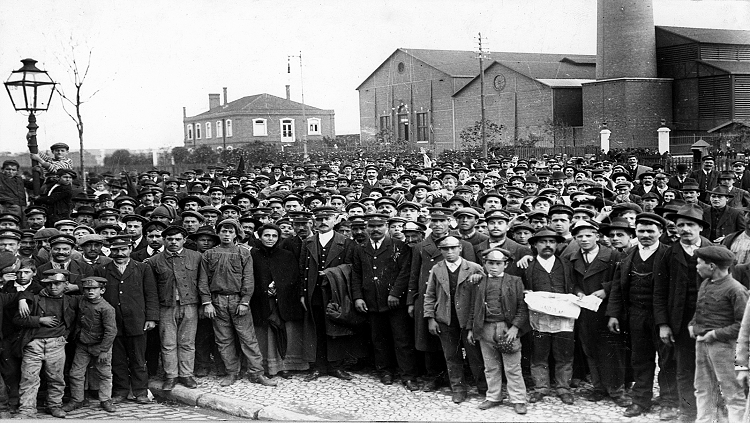
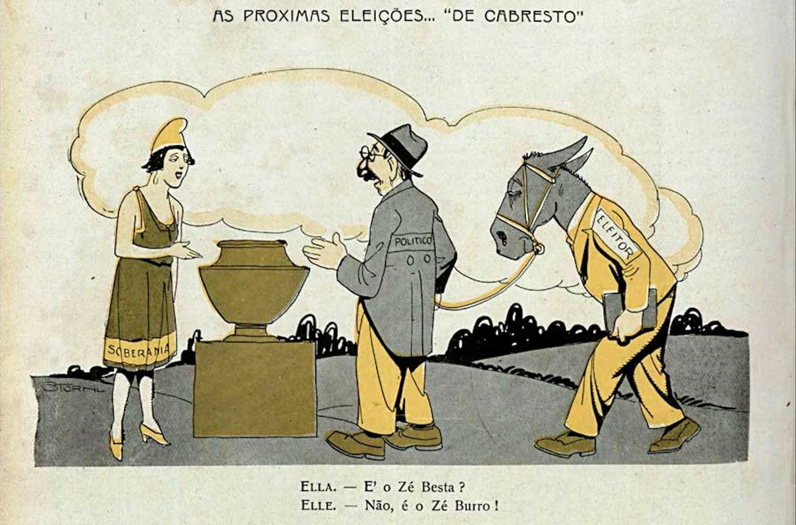
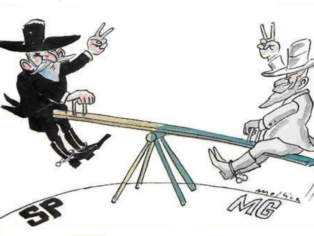

A Primeira República Brasileira (1889-1930)
Conheça o período histórico que moldou o Brasil moderno
Explore a História
Descubra os principais eventos e personagens desse período fascinante




Sobre a Primeira República
A Primeira República, também conhecida como República Velha, foi o período da história do Brasil que se estendeu da Proclamação da República em 15 de novembro de 1889 até a Revolução de 1930. Foi marcada por:
- Política do Café com Leite
- Movimentos sociais como Canudos e Contestado
- Modernização urbana e industrialização incipiente
- Semana de Arte Moderna de 1922
- Crises políticas e econômicas que culminaram na Revolução de 1930
- Política de alianças e a influência dos militares